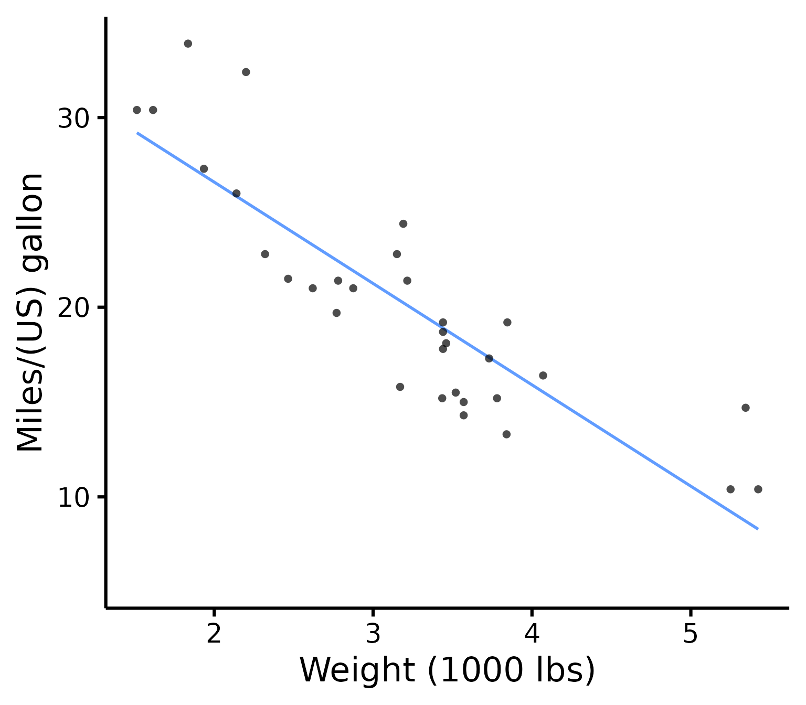
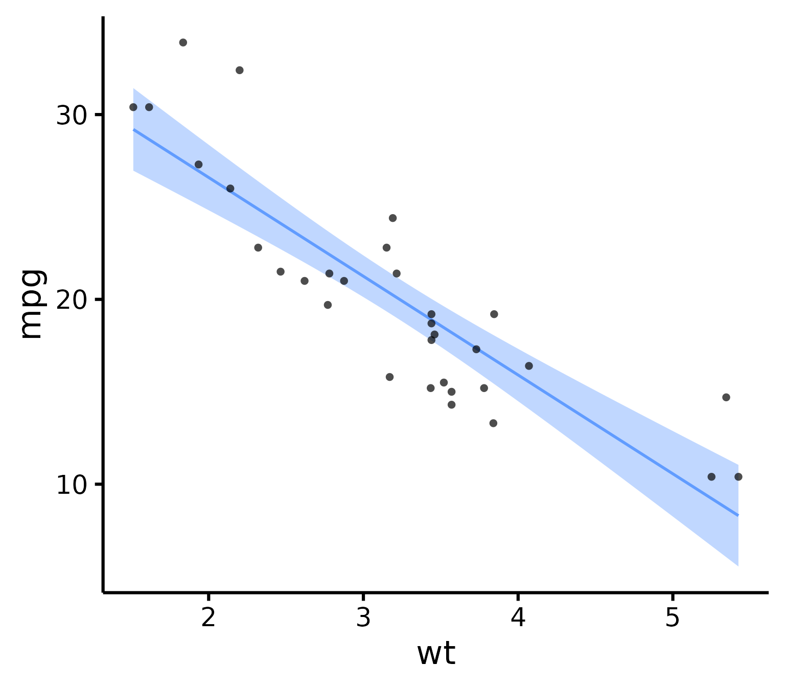
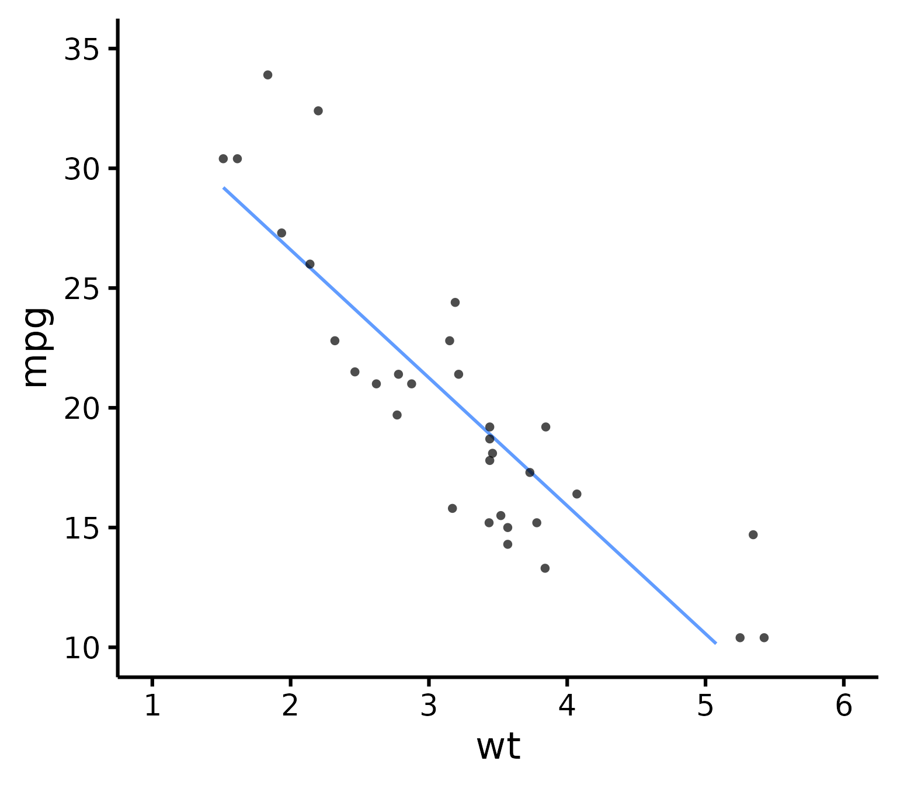
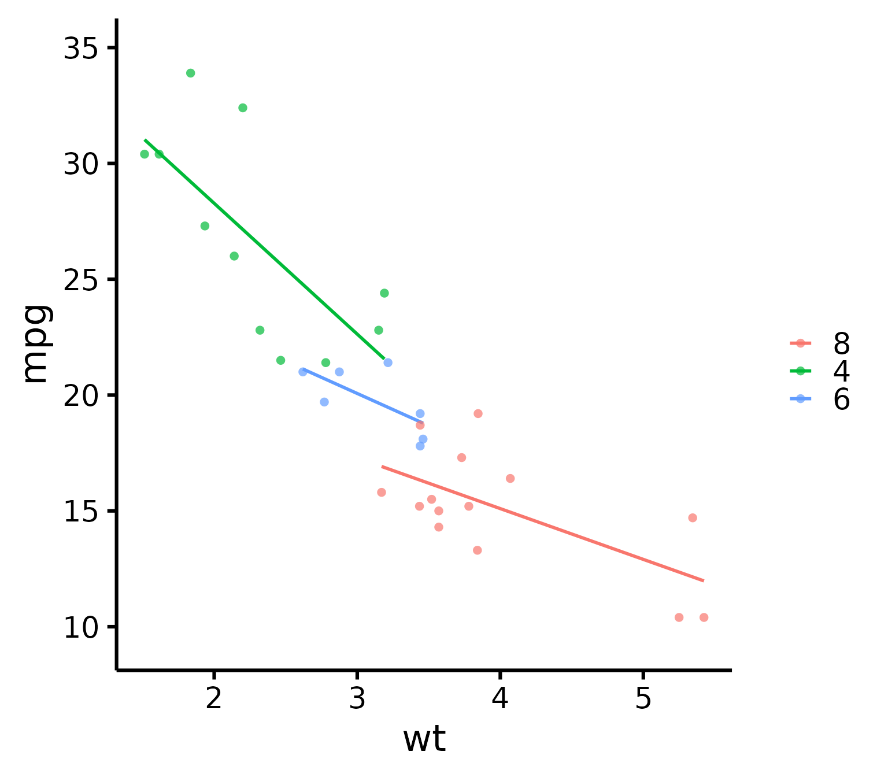
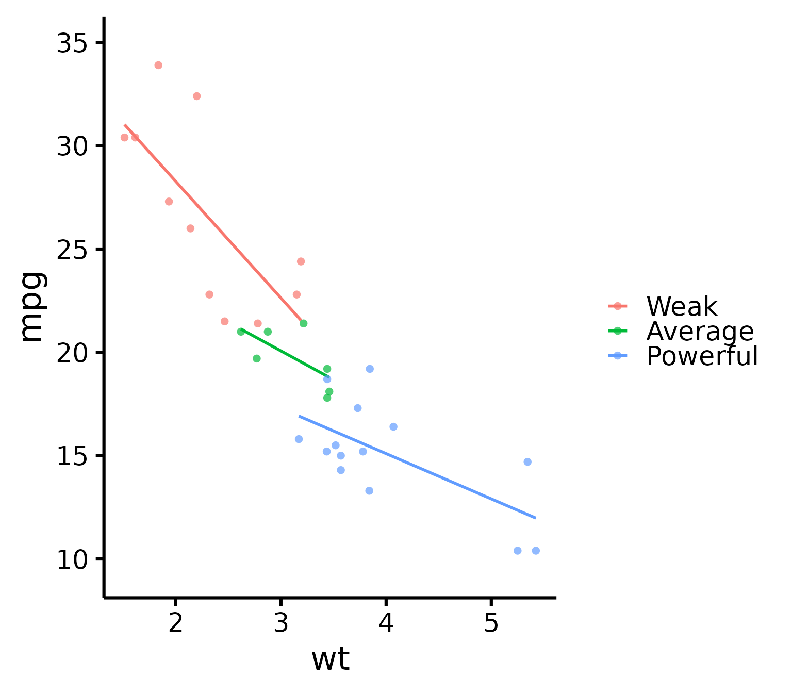
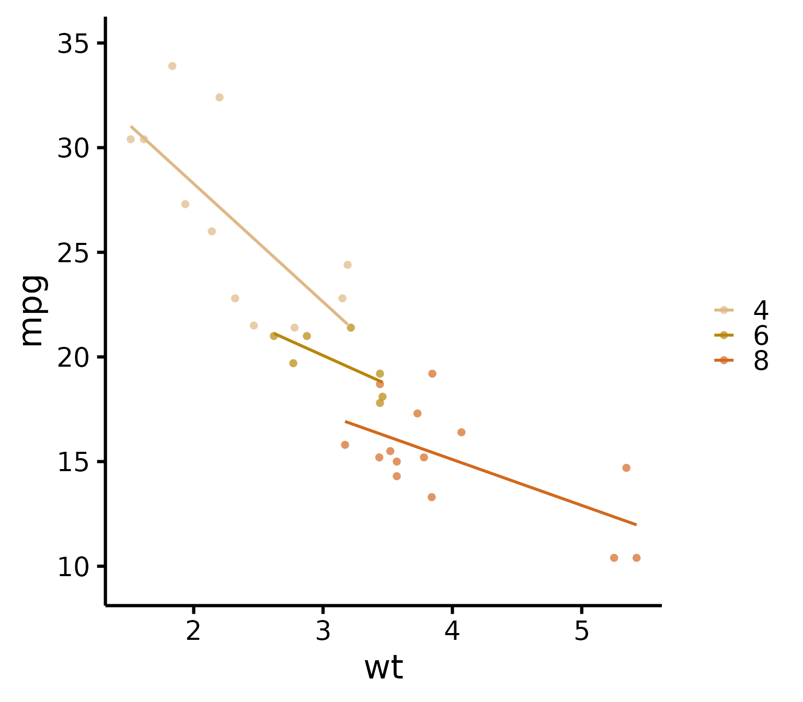
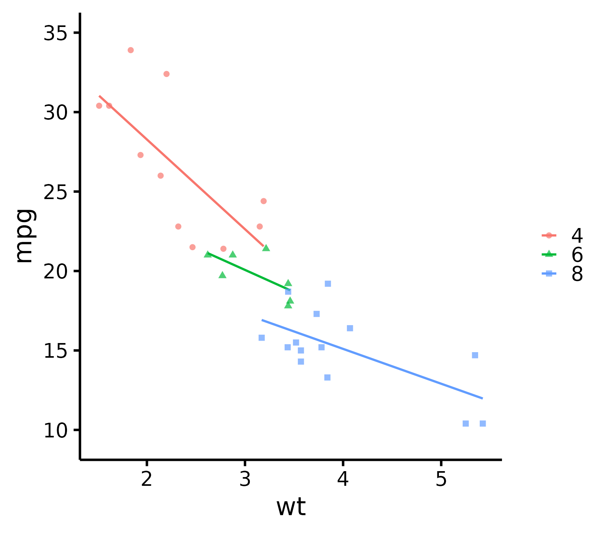
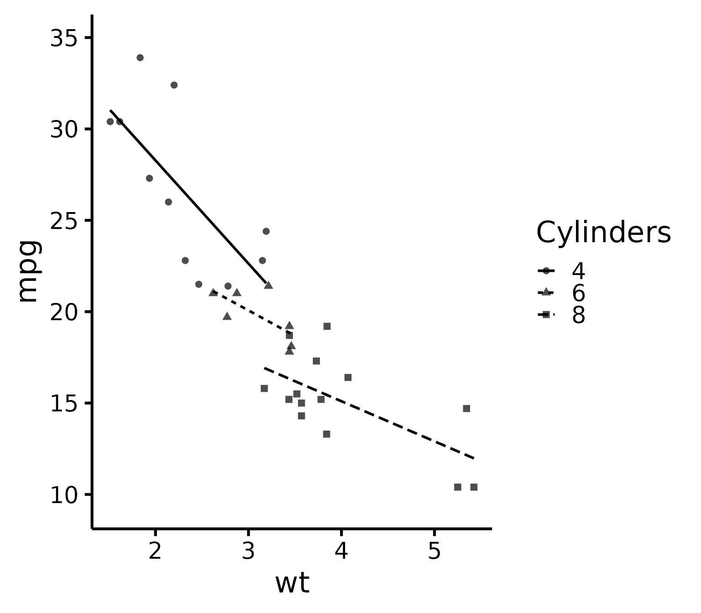
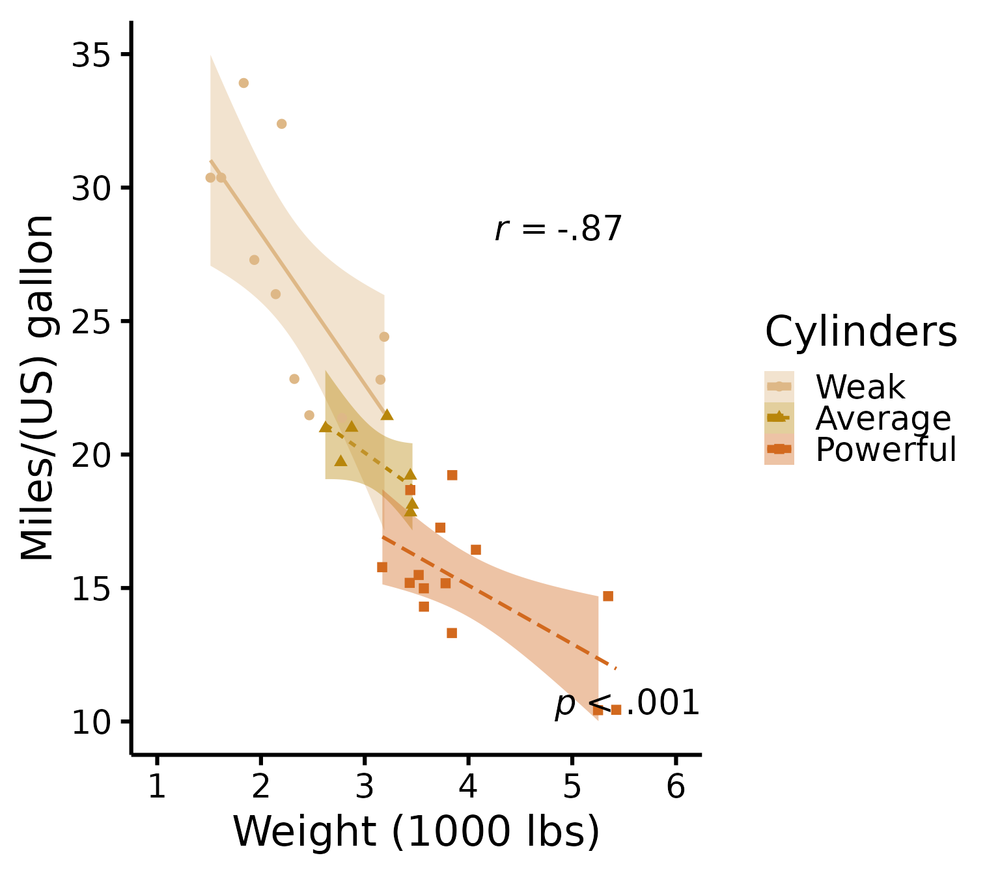

Publication-ready scatter plots in R
Rémi Thériault
September 12, 2019
Source:vignettes/scatter.Rmd
scatter.RmdBasic idea
After the nice_violin() function, here’s how to make nice scatter plots easily!
Let’s first load the demo data. This data set comes with base R (meaning you have it too and can directly type this command into your R console).
## mpg cyl disp hp drat wt qsec vs am gear carb
## Mazda RX4 21.0 6 160 110 3.90 2.620 16.46 0 1 4 4
## Mazda RX4 Wag 21.0 6 160 110 3.90 2.875 17.02 0 1 4 4
## Datsun 710 22.8 4 108 93 3.85 2.320 18.61 1 1 4 1
## Hornet 4 Drive 21.4 6 258 110 3.08 3.215 19.44 1 0 3 1
## Hornet Sportabout 18.7 8 360 175 3.15 3.440 17.02 0 0 3 2
## Valiant 18.1 6 225 105 2.76 3.460 20.22 1 0 3 1Getting started
Load the rempsyc package:
Note: If you haven’t installed this package yet, you will need to install it via the following command:
install.packages("rempsyc").
nice_scatter(data = mtcars,
predictor = "wt",
response = "mpg")
### Save a high-resolution image file to specified directory
ggplot2::ggsave('nice_scatterplothere.pdf', width = 7, height = 7,
unit = 'in', dpi = 300)
# Change the path to where you would like to save it.
# If you copy-paste your path name, remember to
# use "R" slashes ('/' rather than '\').
# Also remember to specify the .tiff extension of the file.Pro tip: Recommended dimensions for saving is 7 inches wide and 7 inches high. The
.epsformats are recommended for scalable vector graphics for high-resolution submissions to scientific journals. However, you can also save in other formats, such as.tiff,.png, or.jpg.
Customization
Change x- and y- axis labels
nice_scatter(data = mtcars,
predictor = "wt",
response = "mpg",
ytitle = "Miles/(US) gallon",
xtitle = "Weight (1000 lbs)")
Have points “jittered”
Meaning randomly moved around a bit to prevent overplotting (when two or more points overlap, thus hiding information).
nice_scatter(data = mtcars,
predictor = "wt",
response = "mpg",
has.jitter = TRUE)
Change the transparency of the points
nice_scatter(data = mtcars,
predictor = "wt",
response = "mpg",
alpha = 1) # default is 0.7Remove points
nice_scatter(data = mtcars,
predictor = "wt",
response = "mpg",
has.points = FALSE,
has.jitter = FALSE)Add confidence band
nice_scatter(data = mtcars,
predictor = "wt",
response = "mpg",
has.confband = TRUE)
Set x- and y- scales manually
nice_scatter(data = mtcars,
predictor = "wt",
response = "mpg",
xmin = 1,
xmax = 6,
xby = 1,
ymin = 10,
ymax = 35,
yby = 5)
Change plot colour
nice_scatter(data = mtcars,
predictor = "wt",
response = "mpg",
colours = "blueviolet")
Add correlation coefficient to plot and p-value
nice_scatter(data = mtcars,
predictor = "wt",
response = "mpg",
has.r = TRUE,
has.p = TRUE)Change location of correlation coefficient or p-value
nice_scatter(data = mtcars,
predictor = "wt",
response = "mpg",
has.r = TRUE,
r.x = 4,
r.y = 25,
has.p = TRUE,
p.x = 5,
p.y = 20)
Use full range on the slope/confidence band
nice_scatter(data = mtcars,
predictor = "wt",
response = "mpg",
group = "cyl",
has.fullrange = TRUE)
Add a legend
nice_scatter(data = mtcars,
predictor = "wt",
response = "mpg",
group = "cyl",
has.legend = TRUE)
Change order of labels on the legend
nice_scatter(data = mtcars,
predictor = "wt",
response = "mpg",
group = "cyl",
has.legend = TRUE,
groups.order = c(8,4,6))
# These are the levels of 'mtcars$cyl', so we place lvl 8
# first, then lvl 4, etc.Change legend labels
nice_scatter(data = mtcars,
predictor = "wt",
response = "mpg",
group = "cyl",
has.legend = TRUE,
groups.labels = c("Weak","Average","Powerful"))
# Warning: This applies after changing order of level**Warning**: This only changes labels and applies after changing order of level!
Always use `groups.order` first if you also need to use `groups.labels`!
This is to make sure to have the right labels for the right groups!Add a title to legend
nice_scatter(data = mtcars,
predictor = "wt",
response = "mpg",
group = "cyl",
has.legend = TRUE,
legend.title = "Cylinders")Plot by group + manually specify colours
nice_scatter(data = mtcars,
predictor = "wt",
response = "mpg",
group = "cyl",
colours = c("burlywood", "darkgoldenrod", "chocolate"))
Plot by group + use different line types for each group
nice_scatter(data = mtcars,
predictor = "wt",
response = "mpg",
group = "cyl",
has.linetype = TRUE)Plot by group + use different point shapes for each group
nice_scatter(data = mtcars,
predictor = "wt",
response = "mpg",
group = "cyl",
has.shape = TRUE)
Plot by group, point shapes, line types, legend + no colours (black and white)
nice_scatter(data = mtcars,
predictor = "wt",
response = "mpg",
group = "cyl",
has.legend = TRUE,
legend.title = "Cylinders",
has.linetype = TRUE,
has.shape = TRUE,
colours = rep("black", 3))
Putting it all together
If you’d like to see all available options at once (a bit long):
nice_scatter(data = mtcars,
predictor = "wt",
response = "mpg",
ytitle = "Miles/(US) gallon",
xtitle = "Weight (1000 lbs)",
has.points = FALSE,
has.jitter = TRUE,
alpha = 1,
has.confband = TRUE,
has.fullrange = FALSE,
group = "cyl",
has.linetype = TRUE,
has.shape = TRUE,
xmin = 1,
xmax = 6,
xby = 1,
ymin = 10,
ymax = 35,
yby = 5,
has.r = TRUE,
has.p = TRUE,
r.x = 5.5,
r.y = 25,
colours = c("burlywood", "darkgoldenrod", "chocolate"),
has.legend = TRUE,
legend.title = "Cylinders",
groups.labels = c("Weak", "Average", "Powerful"))
Special situation: Add group average
There’s no straightforward way to add group average, so here’s a hack to do it. We first have to create a second data set with another “group” that will be used as the average.
Black line + coloured lines
# This simply copies the 'mtcars' dataset
new.Data <- mtcars
# That would be your "Group" variable normally
# And this operation fills all cells of that column with the word
# "Average" to identify our new 'group'
new.Data$cyl <- "Average"
# This adds the new "Average" group rows to the original data rows
XData <- rbind(mtcars,new.Data)Then we need to create a FIRST layer of just the slopes. We add transparency to the group lines except the group average to emphasize the group average (with the new argument groups.alpha).
(p <- nice_scatter(data = XData,
predictor = "wt",
response = "mpg",
has.points = FALSE,
has.legend = TRUE,
group = "cyl",
colours = c("black", "#00BA38", "#619CFF", "#F8766D"),
# We add colours manually because we want average to be black to stand out
groups.order = c("Average","4","6","8"),
# We do this to have average on top since it's the most important
groups.alpha = c(1,0.5,0.5,0.5)))
# This adds 50% transparency to all lines except
# the first one (Average) which is 100%Finally we are ready to add a SECOND layer of just the points on top of our previous layer. We use standard ggplot syntax for this.
Black line, coloured dots
If you’d like instead to still show the group points but only the black average line, you can do the following as first layer:
(p <- nice_scatter(data = mtcars,
predictor = "wt",
response = "mpg",
has.points = FALSE,
has.legend = TRUE,
# Important argument! Else the next legend won't appear on the second layer!
colours = "black"))
Then to add the points as second layer we do the same as before:
p + geom_point(data = mtcars,
size = 2,
alpha = 0.5,
shape = 16,
mapping = aes(x = wt,
y = mpg,
colour = factor(cyl)))
Thanks for checking in
Make sure to check out this page again if you use the code after a time or if you encounter errors, as I periodically update or improve the code. Feel free to contact me for comments, questions, or requests to improve this function at https://github.com/rempsyc/rempsyc/issues. See all tutorials here: https://remi-theriault.com/tutorials.